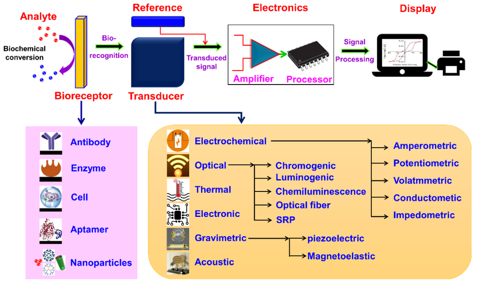

포도당 바이오센서 (Glucose Biosensor)
검수 완료

| # | 원문 | 한국어 |
|---|---|---|
| 1 | Analyte | 분석 대상 물질 |
| 2 | Biochemical conversion | 생화학적 변환 |
| 3 | Bio-recognition | 생체 인식 |
| 4 | Bioreceptor | 생체 수용체 |
| 5 | Reference | 기준 |
| 6 | Transducer | 변환기 |
| 7 | Transduced signal | 변환된 신호 |
| 8 | Electronics | 전자부 |
| 9 | Amplifier | 증폭기 |
| 10 | Processor | 처리기 |
| 11 | Signal processing | 신호 처리 |
| 12 | Display | 표시부 |
| 13 | Antibody | 항체 |
| 14 | Enzyme | 효소 |
| 15 | Cell | 세포 |
| 16 | Aptamer | 앱타머 |
| 17 | Nanoparticles | 나노입자 |
| 18 | Electrochemical | 전기화학 |
| 19 | Optical | 광학 |
| 20 | Thermal | 열 |
| 21 | Electronic | 전자 |
| 22 | Gravimetric | 질량 측정식 |
| 23 | Acoustic | 음향 |
| 24 | Chromogenic | 발색 |
| 25 | Luminogenic | 발광 |
| 26 | Chemiluminescence | 화학발광 |
| 27 | Optical fiber | 광섬유 |
| 28 | SRP | 표면 플라스몬 공명(SPR) |
| 29 | piezoelectric | 압전 |
| 30 | Magnetoelastic | 자기탄성 |
| 31 | Amperometric | 전류법 |
| 32 | Potentiometric | 전위차법 |
| 33 | Voltammetric | 전압전류법 |
| 34 | Conductometric | 전도도법 |
| 35 | Impedometric | 임피던스법 |
쉽게 풀면
포도당 바이오센서는 당뇨병 환자들이 사용하는 혈당 측정기의 핵심 부품으로 흔히 접할 수 있다. 센서 안에는 포도당과만 특이적으로 반응하는 효소가 들어 있어서, 손끝에서 채취한 혈액 한 방울을 떨어뜨리면 이 효소가 포도당과 반응하면서 전자를 내놓는다. 이 전자의 흐름, 즉 전류의 크기가 포도당 농도에 비례하기 때문에 기계가 이를 읽어 숫자로 바꿔준다. 쉽게 말해 포도당의 양을 전기 신호의 세기로 번역해 주는 장치이다.
왜 중요한가
포도당 바이오센서는 당뇨병 관리를 위한 자가 혈당 측정 및 연속 혈당 모니터링 기술의 핵심 기반이며, 전기화학적 바이오센서 중 가장 오랫동안 상용화되어 온 대표 사례이다. 웨어러블 기기와 결합한 연속 혈당 측정 연구는 만성질환 관리 분야에서 지속적으로 다뤄지는 중요한 주제이다.
무엇을 재는가
- 바이오센서는 대상을 알아보는 생체 수용체(효소, 항체, 세포, 핵산, 앱타머), 상호작용을 측정 가능한 신호로 바꾸는 변환기, 신호를 증폭·처리·표시하는 전자부로 이루어진다.
- 상용 혈당 센서는 포도당 산화효소(GOx)를 수용체로 쓴다. 이 효소가 포도당을 산화하고 과산화수소를 만들며, 전극이 이를 감지하고 생긴 전류가 포도당 농도를 알려 준다.
- 전기화학 센서는 전극에서 전류, 전위, 임피던스 같은 전기적 변화를 잰다. 광학 센서는 흡광이나 형광 같은 빛의 변화를 감지하며 표면 플라스몬 공명(SPR)이 대표적이다.
- 혈당 측정기의 시험지는 대부분 GOx를 쓰고, 일부는 포도당 탈수소효소(GDH)를 쓴다. GDH는 더 민감하지만 다른 물질의 간섭을 받기 쉽다.
구성과 채점
- 측정 원리: 현대 측정기는 모세관으로 소량의 혈액을 빨아들인다. 포도당이 효소와 반응하면 매개체(페리시안화 이온, 페로센 유도체, 오스뮴 비피리딜 착물 등)가 전자를 전극으로 나르고 전류가 생긴다. 시간에 걸친 전체 전하(쿨롱법)나 한 순간의 전류(전류법)로 포도당을 추정한다.
- 역사: 리랜드 클라크가 1956년 산소 전극을 발표했고, 1962년 클라크와 앤 라이언스가 GOx가 소비한 산소를 재는 첫 포도당 효소 전극을 만들었다(다른 자료는 챔프 라이언스로 적는다). 초기 측정기는 시간을 맞춘 발색 반응을 썼고 잦은 보정이 필요했다. 가정용 측정기는 1981년경 나왔다.
- 연속 혈당 측정(CGM): 일회용 피하 센서, 송신기, 판독기로 구성되며 센서는 며칠 동안 쓰고 정기적인 손끝 채혈 없이 거의 실시간으로 읽는다. 혈액이 아니라 간질액을 재므로 혈액보다 뒤처져 정확도가 낮고 비싸다.
결과 읽는 법
- 정확도 기준(ISO 15197): 측정기는 적어도 95%의 경우에 100 mg/dL를 넘는 값에서 검사실 기준값의 ±15% 이내, 100 mg/dL 미만에서 ±15 mg/dL 이내로 읽어야 한다.
- 영향 요인: 보정, 온도, 습도, 헤마토크릿, 높은 아스코르브산 농도, 시험지 노화가 정확도에 영향을 준다. 오차의 임상적 결과는 클라크 오차 격자와 합의 오차 격자로 평가한다.
- 논문에는 센서 종류(GOx/GDH, 전류법/쿨롱법), 시료(혈액/간질액), 비교 기준을 적는다.
논문에서는 이렇게 쓰입니다
예시 문장
아래 예문은 용어의 쓰임을 보이려고 만든 것으로, 실제 논문 문장이 아니다.
다양한 농도 구간에서 측정값이 실제 포도당 양에 비례하여 정확하게 반응했다는 뜻이다.
바늘로 채혈하지 않고도 땀을 통해 혈당 관련 정보를 얻으려는 시도였다는 의미이다.
조금 더 깊게 보면
포도당 바이오센서는 주로 포도당 산화효소(GOx)나 포도당 탈수소효소(GDH)를 이용하며, 효소 반응으로 생성된 과산화수소나 전자를 전극에서 측정하는 전류법(amperometric) 방식이 대표적이다. 최근에는 효소 없이 나노소재의 촉매 특성을 이용하는 비효소적(non-enzymatic) 방식도 함께 연구되고 있다. 연속혈당측정기(CGM)는 피부 밑에 삽입한 센서로 조직액의 포도당 농도를 지속적으로 측정하는 방식이며, 손끝 채혈 방식과 달리 하루 중 혈당 변화 추이를 연속적으로 보여준다는 점에서 최근 연구가 활발하다.
주의할 점
효소 기반 센서는 온도, pH, 효소의 활성 저하 등에 따라 측정 정확도가 달라질 수 있어 보관 조건과 유효기간 관리가 중요하며, 땀이나 눈물 등 대체 체액을 이용한 비침습 측정은 혈당과의 상관관계 검증이 아직 활발히 연구되는 단계이다.
조직액의 포도당 농도는 혈액 포도당 농도보다 수 분 정도 지연되어 나타날 수 있어, 혈당이 급격히 변하는 상황에서는 두 값의 차이를 고려해야 한다.
참고 문헌
- Wikipedia contributors. (n.d.). Glucose meter. In Wikipedia, The Free Encyclopedia.
- Wikipedia contributors. (n.d.). Biosensor. In Wikipedia, The Free Encyclopedia.